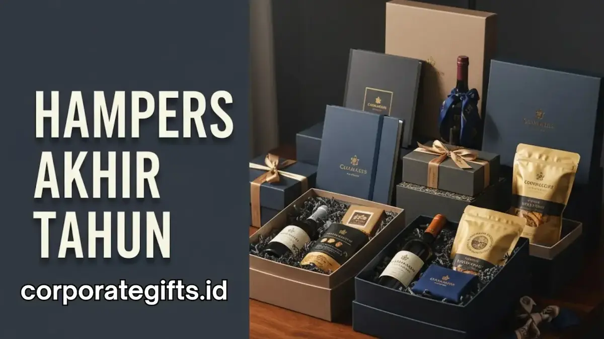

Corporate Gifts ID - Menjelang penutupan tahun buku dan momentum perayaan tahun baru, banyak perusahaan menyiapkan bingkisan akhir tahun sebagai ungkapan terima kasih kepada para mitra strategis. Namun, strategi branding hampers akhir tahun yang sukses tidak sekadar berfokus pada bagi-bagi hadiah massal. Ini adalah seni menyisipkan identitas korporat - mulai dari palet warna, filosofi nilai, hingga logo perusahaan - ke dalam sebuah paket hampers eksklusif yang berkesan mendalam di ingatan pengambil keputusan.
Kunci keberhasilannya terletak pada tiga pilar utama: keselarasan tema bingkisan dengan karakter brand, konsistensi elemen visual kemasan, serta pemilihan item fungsional yang benar-benar memberikan nilai guna nyata bagi penerimanya.
Poin Kunci Strategi Branding Hampers Akhir Tahun:
- Instrumen Hubungan B2B: Berperan sebagai jembatan emosional untuk mengamankan loyalitas klien dan perpanjangan kontrak bisnis.
- Pendekatan Subtle Branding: Penempatan logo yang proporsional dan elegan tanpa terkesan seperti beriklan komersial agresif.
- Dua Target Sasaran: Kurasi produk berbeda antara apresiasi klien eksternal VIP dan penguatan motivasi tim internal.
- Pengalaman Unboxing Mewah: Kualitas material hardbox, kartu ucapan tulisan tangan, dan aroma wewangian meningkatkan kepuasan penerima.
Kekuatan Hampers Akhir Tahun dalam Strategi Public Relations
Hampers akhir tahun memiliki kekuatan visual dan emosional yang jauh melampaui kartu ucapan digital atau pesan singkat. Saat sebuah kotak kado elegan mendarat di meja kerja klien, ia langsung menjadi representasi fisik dari skala, reputasi, dan perhatian perusahaan Anda terhadap kualitas kemitraan.
Pemberian bingkisan yang dirancang dengan cermat mampu mengubah hubungan transaksional yang kaku menjadi relasi kemitraan yang hangat dan berkelanjutan (long-term retention).
4 Langkah Menyusun Strategi Branding Lewat Hampers
Agar anggaran akhir tahun yang dikeluarkan memberikan dampak pemasaran yang terukur, terapkan empat langkah strategis berikut:
- Tetapkan Sasaran Utama (Objective): Tentukan apakah fokus utama hampers adalah menjaga loyalitas 20% klien penyumbang omset terbesar (Pareto Client), memperkuat relasi dengan regulator pemerintah, atau mengapresiasi kinerja karyawan berprestasi.
- Sesuaikan Konsep dengan Citra Brand (Brand Persona): Perusahaan teknologi fintech sangat cocok dengan konsep minimalis-modern berbalut smart gadget. Sebaliknya, institusi perbankan atau korporasi warisan lebih pas mengadopsi tema kearifan lokal berpadu artisan food dan kerajinan tangan premium.
- Terapkan Teknik Subtle Branding: Sematkan logo menggunakan teknik deboss timbul, grafir laser pada produk, atau sablon tipis pada pita satin. Hadiah yang terlalu mencolok dengan logo besar justru membuat penerima enggan menggunakannya di tempat umum.
- Pilih Mitra Pengadaan Berpengalaman: Bekerja sama dengan penyedia spesialis seperti CorporateGifts.ID yang siap memfasilitasi pembuatan sampel mockup gratis dan integrasi brand guidelines secara presisi.
Kurasi Isi Hampers yang Merefleksikan Karakter Brand
Isi di dalam kotak adalah penentu apakah hampers Anda akan dipakai setiap hari atau hanya disimpan di dalam lemari. Pilihlah item yang memiliki durabilitas tinggi dan relevansi kuat dengan rutinitas profesional penerima.
Tabel Komparasi Tema Hampers & Karakter Brand
Berikut matriks kurasi isi hampers akhir tahun yang disesuaikan dengan karakter citra brand dan target audiens penerima:
| Tema Paket Hampers | Karakter Citra Brand | Komposisi Item Custom Unggulan | Target Penerima Utama |
|---|---|---|---|
| Tech-Savvy & Innovation | Modern, Dinamis, Startup, IT | Powerbank Fast Charging, Mouse Wireless, Flashdisk Kartu | Klien Tech, Partner Digital, Millennial Leader |
| Executive Desk Sanctuary | Profesional, Wibawa, Korporat | Buku Agenda Kulit, Pulpen Metal Grafir, Smart Tumbler Suhu | Direksi, Klien VIP, Pejabat BUMN |
| Wellness & Relaxation Kit | Peduli, Humanis, Healthcare | Aromaterapi Reed Diffuser, Lilin Kedelai, Teh Artisan Kaleng | Karyawan Internal, Mitra Konsultan, HR Leader |
| Eco-Friendly Heritage | Berkelanjutan, CSR, Kebanggaan Lokal | Tumbler Bambu FSC, Pouch Kanvas Daur Ulang, Kopi Single Origin | Institusi Pemerintah, Komunitas Hijau, B2G |

Kurasi item fungsional dan kemasan bespoke dengan palet warna brand menciptakan pengalaman unboxing yang memukau.
Seni Subtle Branding pada Desain dan Kemasan
Kemasan adalah media pertama yang disentuh penerima. Desain kemasan rigid hardbox magnetik dengan tekstur premium, pita satin berlogo, serta kartu ucapan personal bertanda tangan pimpinan menciptakan pengalaman unboxing yang membahagiakan.
Hindari memasukkan materi jualan langsung seperti brosur promosi atau selebaran diskon ke dalam hampers. Hal tersebut dapat menghilangkan nuansa apresiasi yang tulus dan membuat hadiah terasa seperti materi kampanye komersial biasa.
Hampers Akhir Tahun untuk Penguatan Budaya Internal
Selain membina hubungan dengan mitra eksternal, hampers akhir tahun adalah sarana ampuh untuk memperkuat budaya organisasi (internal branding). Karyawan yang menerima paket apresiasi setelah setahun penuh bekerja keras akan merasakan ikatan emosional dan rasa memiliki (sense of belonging) yang lebih dalam terhadap perusahaan.
Studi Kasus: Membangun Eksposur Organik di Media Sosial
Banyak korporasi modern di kota-kota besar kini memanfaatkan daya tarik visual hampers untuk memicu publisitas organik. Ketika sebuah paket hampers dirancang sangat estetik dan personal, para eksekutif dan profesional muda dengan senang hati mengunggah foto pengalaman unboxing mereka ke platform profesional seperti LinkedIn dan Instagram.
Publisitas organik dari pihak ketiga ini memberikan kredibilitas dan citra positif (employer branding) yang jauh lebih bernilai dibandingkan iklan berbayar.
Solusi Pengadaan Hampers Akhir Tahun dari CorporateGifts.ID
CorporateGifts.ID siap menjadi mitra strategis Anda dalam merancang dan memproduksi paket hampers akhir tahun perusahaan. Kami menyediakan ratusan kombinasi item merchandise korporat, fasilitas custom hardbox bespoke, serta jaminan pengiriman tepat waktu ke seluruh Indonesia dengan standar kontrol mutu ketat.
Segera diskusikan konsep hadiah akhir tahun instansi Anda bersama konsultan kami guna mendapatkan penawaran harga resmi (RAB) dan preview mockup 3D gratis.